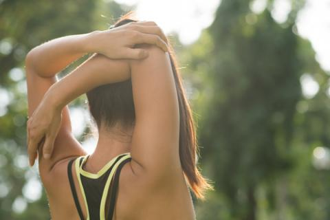
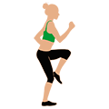
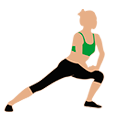

ENTRENAMIENTO PERFECTO
Para realizar el entrenamiento hay que calentar primero

PARA HACERLO MÁS SENCILLO
Minuto 1 a 5

Para poner en marcha los músculos:
Si no vas al gimnasio:
- Empezar caminando
- Aumentar el ritmo hasta terminare una carrera suave
- Por último, subir y bajar las escaleras de nuestro edificio
Si vas al gimnasio:
- Empezar utilizando una bici elíptica o estática
- Ir incrementando paulatinamente
NOTA: Esta segunda opción es más saludable para aquellas personas que tienen problemas en las articulaciones o padecen de lumbalgias, ya que ña carrera está contraindicada en estos
Minuto 5 a 10

Pasamos a los brazos
Independientemente de si vas o no al gimnasio:
- Empezamos con movimientos rotatorios y en diagonal
- Reforzaremos los musculos del cuello girando lentamente la cabeza, aunque sin forzar ni añadir tensión
- Para terminar dedicando los dos ultimos minutos de esta tanda a hacer abdominales o lumbares
Minuto 10 al 15

Para terminar nuestro calentamiento, pasamos a las rodillas
Los ejercicios incluidos en esta fase dependerán del ejercicio concreto que se vaya a realizar, ya que tienen que estar relacionados con los movimientos que se efectuarán en la práctica deportiva
Por ejemplo, en el caso de un partido, se pueden:
Mientras que si se va a hacer esquí o patinaje, el tipo de ejercicios serían:
Sentadiññas para los glúteos
Página hecha opr Lucas